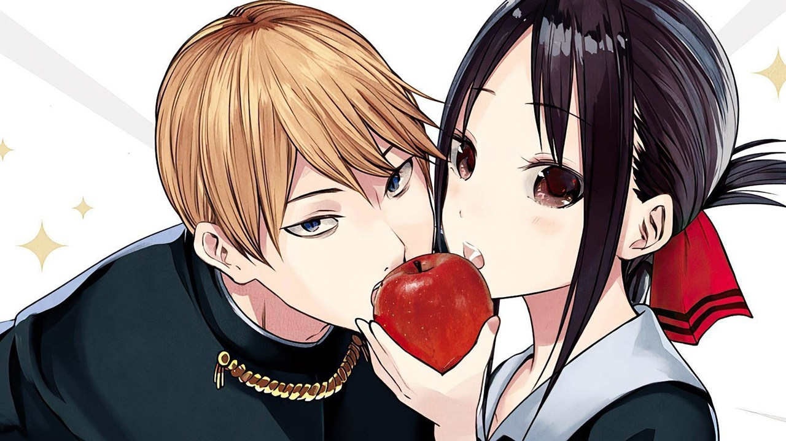
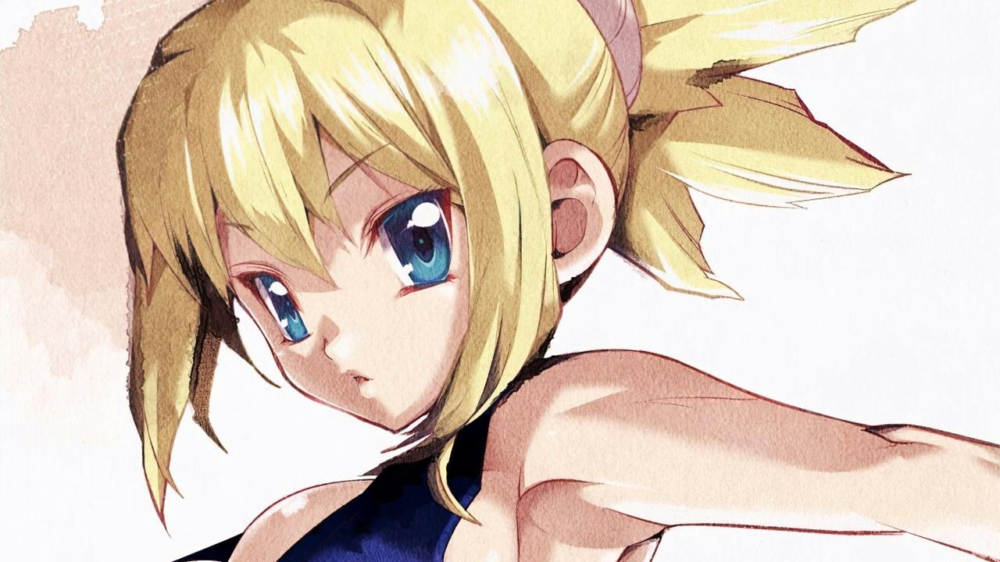

BrocherRainbow
Anime
Contacto
Manga
Mercancia
Reseñas
Search
Manga
Gotoubun no Hanayome tendra un capitulo adicional en mayo
26 abril, 2022
Sono Bisque Doll wa Koi wo Suru ya supera 7 millones de copias en circulación
14 junio, 2022
El autor de Nisekoi publicará un nuevo one-shot en agosto
30 junio, 2022
Así de severo es el dolor de espalda del autor de HUNTER x HUNTER
29 junio, 2022

El manga Kaguya-sama: Love is War está cerca de finalizar
25 junio, 2022
El manga Nana podría tener nuevos anuncios próximamente
23 junio, 2022
Jujutsu Kaisen cae del ranking de ventas semanales por primera vez en largo tiempo
23 junio, 2022

Dr. STONE tendrá un nuevo capítulo con una historia posterior al final
22 junio, 2022